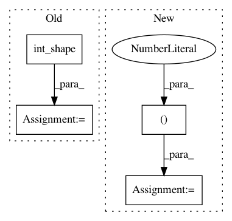

527b35898895eb1befc53de16786d5fb337c8cd2,keras_/kerascv/models/model_store.py,,_preprocess_weights_for_loading,#Any#Any#,284
Before Change
is_channels_first = (K.image_data_format() == "channels_first")
if layer.__class__.__name__ == "Conv2D":
layer_weights0_shape = K.int_shape(layer.weights[0])
if not is_channels_first:
weights[0] = np.transpose(weights[0], (2, 3, 1, 0))
assert (layer_weights0_shape == weights[0].shape)
return weights
After Change
if layer.__class__.__name__ == "Conv2D":
weights[0] = np.transpose(weights[0], (2, 3, 1, 0))
elif layer.__class__.__name__ == "DepthwiseConv2D":
weights[0] = np.transpose(weights[0], (2, 3, 0, 1))
for i in range(len(weights)):
assert (K.int_shape(layer.weights[i]) == weights[i].shape)
return weights
In pattern: SUPERPATTERN
Frequency: 3
Non-data size: 4
Instances
Project Name: osmr/imgclsmob
Commit Name: 527b35898895eb1befc53de16786d5fb337c8cd2
Time: 2019-02-09
Author: osemery@gmail.com
File Name: keras_/kerascv/models/model_store.py
Class Name:
Method Name: _preprocess_weights_for_loading
Project Name: broadinstitute/keras-rcnn
Commit Name: b540e054944fce7065635ac7891f65571ffc4d55
Time: 2017-06-10
Author: jujihong.cn@gmail.com
File Name: keras_rcnn/backend/tensorflow_backend.py
Class Name:
Method Name: crop_and_resize
Project Name: keras-team/keras-applications
Commit Name: e0a649263bdc4b9803c4103f288a0675ebbecd5d
Time: 2019-10-13
Author: me@taehoonlee.com
File Name: keras_applications/resnet_common.py
Class Name:
Method Name: block3